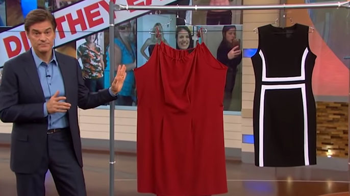
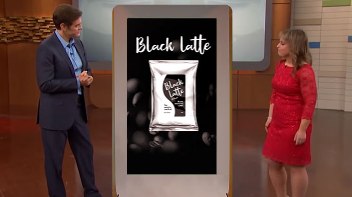
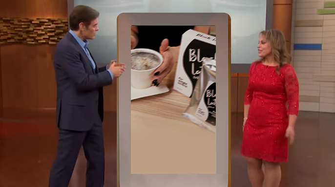
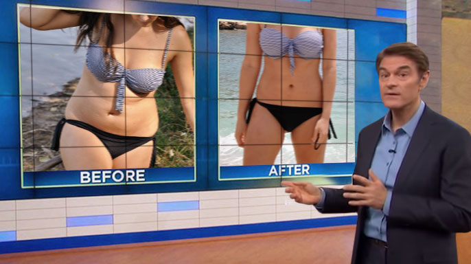
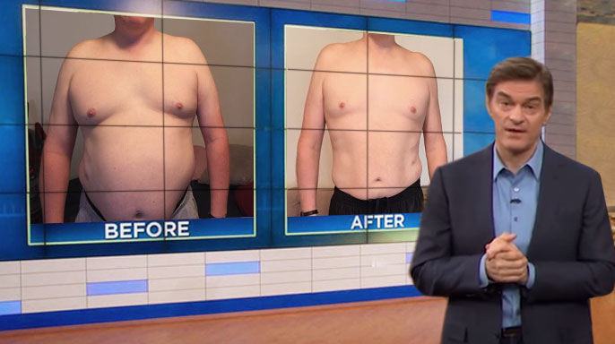
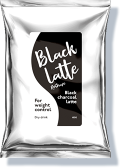

- accelerarea metabolismului
- arderea grăsimilor
- suprimarea apetitului
- eliminarea excesului de fluide și a toxinelor din corp
- amplificarea energiei
Dietele sunt nocive pentru sănătatea ta!
Există o soluție sigură pentru a slăbi
Difuzat inițial pe

Dr. OZ:
Studiile recente au arătat că 71% din populația lumii suferă de greutate în exces, iar acest număr crește constant. Există multe motive pentru aceasta: de la alimentație necorespunzătoare la stres constant, însă nu există multe soluții la această problemă. Cel puțin nu unele eficiente.
Am invitat-o pe nutriționista Gina Fox să ne ajute să înțelegem mai multe despre această problemă. Ea ne va spune ce metode de slăbit amenință viața și care sunt cu adevărat eficiente și chiar benefice.
Dr. OZ:
Gina, spune-ne, te rog, despre metode populare de slăbit. Sunt toate eficiente și sigure?
GF:
Există o mulțime de diete populare în prezent. Însă nu toată lumea înțelege că fiecare organism este unic și are nevoie de propria abordare. Orice plan dietetic ar trebui ales doar cu ajutorul unui specialist. Pentru unele persoane, dietele sunt contraindicate. Pur și simplu îți poți distruge sănătatea încercând să slăbești.
Există o mulțime de diete populare în prezent. Însă nu toată lumea înțelege că fiecare organism este unic și are nevoie de propria abordare. Orice plan dietetic ar trebui ales doar cu ajutorul unui specialist .
Dr. OZ:
Există exemple de consecințe nefaste ale dietelor?
GF:
Există o mulțime de exemple! Recent, am avut o pacientă care a făcut ulcer după ce a ținut o dietă cu ciocolată. Un alt pacient s-a ales cu o formă gravă de anorexie după zeci de diete diferite. A existat chiar și un caz de deces.
Nu vreau să sperii pe nimeni, vreau doar să avertizez oamenii cu privire la consecințele grave ale slăbitului incorect. La urma-urmei, există metode mai blânde și mai eficiente.
Dr. OZ:
Ce vrei să spui?
GF:
De exemplu, Black Latte . Aceasta este o adevărată revoluție în domeniul nutriției. O băutură de cafea, care conține doar ingrediente naturale, care îți fac corpul să slăbească pe cont propriu.

O băutură de cafea, care conține doar ingrediente naturale, care îți fac corpul să slăbească pe cont propriu .
Dr. OZ:
Cum este posibil acest lucru? Spune-ne mai multe.
GF:
Mai demult, erau utilizate tot felul de cocktailuri pentru slăbit și pilule, care conțineau chimicale agresive. Oamenii efectiv își distrugeau corpurile în căutarea unei siluete subțiri. Însă lucrurile s-au schimbat drastic. Componentele naturale pot fi mult mai eficiente, iar combinația potrivită a acestora chiar le îmbunătățește acțiunea.
Același lucru este valabil și în cazul Black Latte . Savanții au reușit să creeze un produs unic care acționează în mai multe direcții în același timp:
Dr. OZ:
Care e cel mai bun mod de a consuma Black Latte pentru a obține rezultatul dorit fără a-ți dăuna sănătății?

Se recomandă consumul băuturii de două-trei ori pe zi în locul gustărilor nocive pe care le iubește toată lumea atât de mult.
GF:
În orice caz, nu-ți poți distruge sănătatea cu această băutură. Black Latte conține cele mai utile componente: cărbune activ, L-carnitină, Omega-3 și ulei de cocos. Se recomandă consumul băuturii de două-trei ori pe zi în locul gustărilor nocive pe care le iubește toată lumea atât de mult. Vei obține senzația de sațietate care durează câteva ore, cu un nivel minim de calorii.
Încă de la prima porție, componentele active ale produsului încep să ardă grăsimea subcutanată. Toate procesele metabolice sunt amplificate, ai foarte multă energie. Nici nu vei observa cum începi să slăbești zi de zi.


Dr. OZ:
Iar acum, întrebarea principală: de unde pot achiziționa cititorii noștri Black Latte ? Nu l-am văzut pe rafturile supermarketurilor.
GF:
Și nici nu-l vei vedea. Black Latte se vinde doar pe website-ul oficial al producătorului. Acest lucru reduce numărul de produse contrafăcute. În plus, oferă ocazia de a vinde produsul la un preț bun, fără intermediari. De exemplu, în prezent, site-ul oferă o reducere de 50%.
Dr. OZ:
Gina, îți mulțumesc pentru acest interviu interesant. Cred că mulți oameni vor acorda atenție produsului Black Latte și vor înceta să se mai tortureze cu diete dure și nesănătoase.

Cred că mulți oameni vor acorda atenție produsului Black Latte și vor înceta să se mai tortureze cu diete dure și nesănătoase.
Dr. OZ
Comandă acumArticolele speciale ale lui OZ
-

Christina Aguilera, cântăreață
„Nu am încercat niciodată să țin diete, nu am suficientă voință. Prefer să merg la sală. Însă cu sportul, am reușit să slăbesc maximum 5 kilograme. La un moment dat, am aflat despre Black Latte , am început să-l iau și nici măcar nu am observat cum am slăbit 20 kg. Este un arzător de grăsimi foarte bun. Și, cel mai important, greutatea nu revine. Sunt foarte încântată.”


-
„Să slăbești și să te îngrași pentru fiecare rol nu e așa ușor cum pare. După «Jurnalul lui Bridget Jones», nu am putut slăbi mai bine de un an. Metabolismul meu a fost dereglat și nimic nu m-a ajutat. Sunt atât de fericită că am aflat despre Black Latte . Am slăbit în doar două luni datorită acestei băuturi delicioase. Acum fac o cură tot la șase luni. Foarte mulțumită.”
Comentariile utilizatorilor:
Chiar este posibil să slăbești astfel? Țin diete de peste un an, dar încă nu văd niciun rezultat. Probabil voi încerca Black Latte
Am înțeles de mult timp că exercițiile fizice nu au rezultate fără diete. Pentru mine, combinarea acestor activități este aproape imposibilă... Black Latte este soluția perfectă. Cu acest produs, am slăbit 21 kg în doar două luni. După aceea, am mers la sală, iar acum, corpul meu arată perfect!
Trebuie să te antrenezi din greu câteva ore la sală pentru a slăbi! Eu am pierdut 10 kg în șase luni.
Cel mai neplăcut lucru, din punctul meu de vedere, este că toate kilogramele pierdute revin într-un final. Am reușit să slăbesc 8 kg, însă acestea au revenit în șase luni.
WOW! Și eu vreau să-l încerc!
Am ținut o dietă timp de o lună, am reușit să slăbesc 7 kg. E destul de mult pentru mine. Greutatea este stabilă deocamdată, însă am probleme cu stomacul :( Poate e o consecință a dietelor, cine știe...
Iubesc Black Latte , este băutura mea preferată. Am înlocuit ceaiul și cafeaua cu aceasta, curăță perfect corpul și este foarte gustoasă!
Fetelor, iată. Pentru a slăbi, trebuie să mănânci mai puțin!
Tocmai am comandat trei pachete. Website-ul oferă acum reduceri foarte mari!
De ce mănâncă unii foarte mult și rămân slabi, în timp ce alții se limitează, iar greutatea în exces este în continuare prezentă?
Totul depinde de metabolismul tău. Dacă e lent, atunci te vei îngrășa oricum. Black Latte contribuie la accelerarea metabolismului. Cu ajutorul său, corpul tău va scăpa cu siguranță de kilogramele în plus. Un remediu foarte benefic.